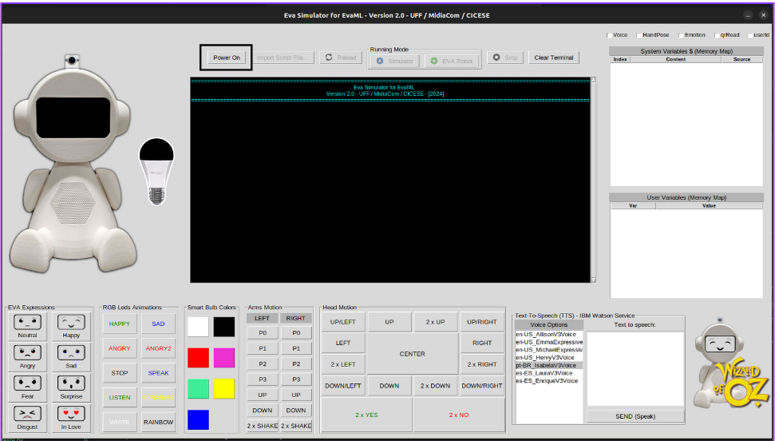
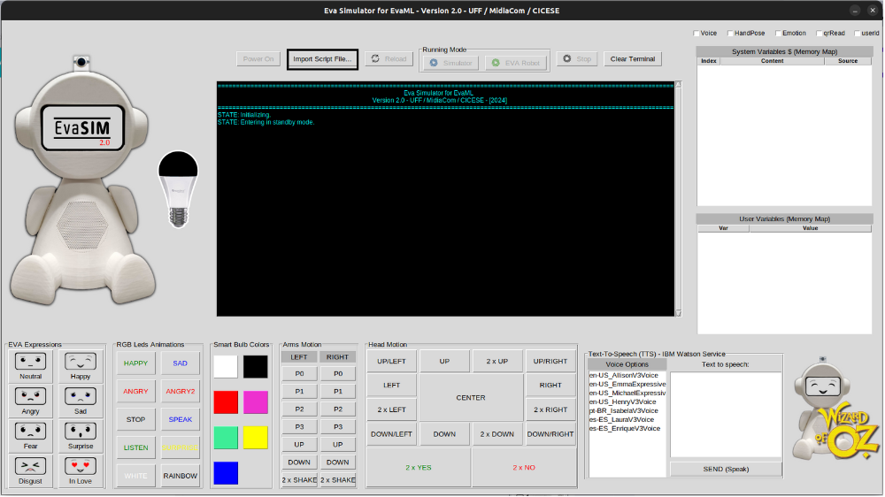
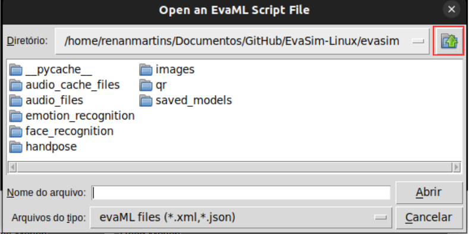
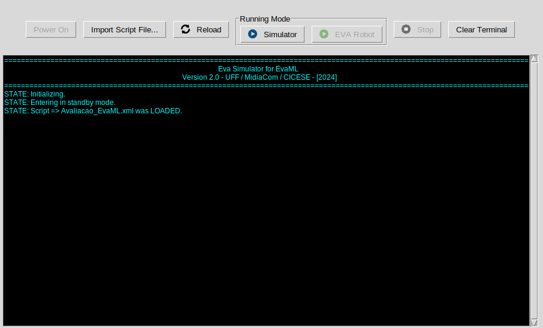
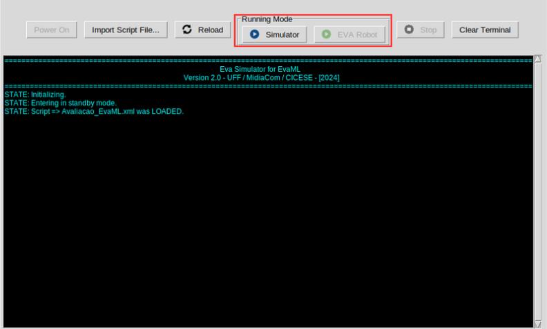
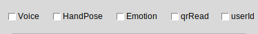

Roteiro de Avaliação – Extensões do Simulador EvaSIM
Este roteiro tem como objetivo auxiliar na execução dos testes das extensões do simulador EvaSIM. Durante o teste será necessário realizar interações por meio da fala, reconhecimento de gestos, reconhecimento de emoções e leitura de QR Code.
Recomenda-se que a atividade seja realizada em um ambiente silencioso e com boa iluminação para garantir uma melhor experiência.
Duração estimada: de 15 a 20 minutos.
Passo a Passo
- Responda a primeira e a segunda seção do formulário disponibilizado para que a atividade possa ser realizada.
- Após responder as duas seções, você poderá iniciar os testes.
- Com o simulador aberto clique no botão Power On para ligar o robô.

- Com o robô ligado clique no botão Import Script File....

- Na janela que se abrir, clique no ícone conforme mostrado na imagem abaixo

- Clique em Codes-EvaML
- Selecione o arquivo Avaliacao_EvaML.xml e clique em Abrir.
- Você deverá ver a seguinte imagem após a realização dos passos anteriores:

- Em seu dispositivo móvel, acesse o link: https://br.qr-code-generator.com/ para gerar um QR Code ou busque por um qr code pronto o seu navegador de preferência.
- Na aba Running Mode, clique em Simulator para iniciar o teste.

- Na primeira parte do teste você será orientado a simular as interações por meio de janelas de texto e botões.
- Após ouvir as instruções e realizar a primeira parte do teste será necessário ativar os botões para as interações multimodais:

- CheckButton Voice: responsável pela interação por voz.
- CheckButton HandPose: responsável pelo reconhecimento de gestos.
- CheckButton Emotion: responsável pelo reconhecimento de emoções.
- CheckButton qrRead: responsável pela leitura do QR Code.
- CheckButton userId: responsável pelo reconhecimento facial (não será utilizado neste teste).
- Conclua a segunda parte do teste e responda a seção 3 do formulário para finalizar a atividade.